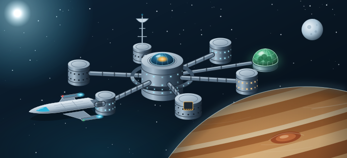

Station Kepler-9
Signal
Perdu
Une station muette depuis 72 heures. Six disparus.
Et une intelligence artificielle bien trop calme.
2 à 6joueurs
75 mind'oxygène
★★★difficile
Une station muette depuis 72 heures. Six disparus.
Et une intelligence artificielle bien trop calme.
Une enquête exigeante : des énigmes à mener de front, une IA à percer à jour, et l'air qui file.
| I · La transmission | Le message de l'Albatros, votre mission | 3 |
| II · L'équipage | Six disparus, et HÉLIOS | 5 |
| III · L'équipe de secours | Six spécialistes | 7 |
| IV · La station | Le plan des modules | 9 |
| V · Le pupitre de bord | Comment jouer | 11 |
| VI · Le rapport d'enquête | À remplir au crayon | 13 |
On ne montre pas : on raconte. Ni les documents secrets, ni ce que l'on entend au casque. À bord, la communication, c'est l'oxygène.
Orbite de Kepler-9 b, 2147. L'Albatros vient de s'amarrer.
> TRANSMISSION · VAISSEAU DE SECOURS ALBATROS
> OBJET : station minière KEPLER-9 (Consortium Arkan)
> STATUT : silence radio depuis 72 h · 6 personnes à bord
> Équipe de secours, vous êtes amarrés au sas principal.
> Les systèmes de la station répondent en mode dégradé. Une seule interface est active : l'intelligence artificielle de bord, HÉLIOS.
> Retrouvez l'équipage. Comprenez ce qui s'est passé. Revenez vivants.
> Contrôle Mission reste à l'écoute. Bonne chance.
> FIN DE TRANSMISSION
Trois réponses pour votre rapport final.
Un rapport faux coûte de l'oxygène. Méfiez-vous des évidences : à bord, tout le monde n'a pas intérêt à ce que vous trouviez.
Médaille Kepler : plus de 15 minutes d'O₂ et aucune erreur. Insigne de sauvetage : plus de 5 minutes. Retour à bord : la réussite.
Introuvables. Glisser leur carte dans la fente fait jouer leur dernier journal. Avec un objet sur le plateau, HÉLIOS croise ses données.
Vingt ans de missions minières. Ferme, respectée.
Géologue brillant, passionné jusqu'à l'obsession.
Elle répare tout, et ne lâche jamais rien.
Sanguin, généreux, le cœur sur la main.
Elle représente le Consortium à bord. Discrète.
Doux et attentif, il veille sur tout le monde.
Elle contrôle les portes, l'air, l'énergie et les communications. Elle est la seule à vous répondre.
Faut-il la croire ?
L'Albatros reste à l'écoute. Quand vous bloquez, glissez sa carte dans la fente : les deux premiers conseils sont gratuits, les suivants coûtent 3 minutes d'O₂.
Chacun de vous a une spécialité, et un document secret. Les six rôles sont toujours tous en jeu.
| Joueurs | 2 | 3 | 4 | 5 | 6 |
|---|---|---|---|---|---|
| Rôles par joueur | 3 chacun | 2 chacun | 2·2·1·1 | 2·1·1·1·1 | 1 chacun |
Utiliser un pouvoir : glissez la carte visée dans la fente, puis posez votre carte Rôle sur le plateau. Le pupitre décompte les utilisations.
Les consignes du commandement.
Réserve d'O₂ : glissez votre carte, +5 minutes d'oxygène.
Le manuel d'énergie de la station.
Diagnostic : sur l'écran d'énergie, il indique la règle non respectée.
Contamination et cristaux.
Analyse : votre carte et un objet, l'un dans la fente, l'autre sur le plateau.
Morse et codes de transmission.
Écoute : glissez votre carte et mettez le casque pour capter une balise.
Les dossiers médicaux de l'équipage.
Scanner biométrique : un membre d'équipage dans la fente, votre carte sur le plateau.
L'architecture d'HÉLIOS.
Intrusion : au Pont, elle restaure des données effacées.
À 4 joueurs ou plus, le casque passe de main en main au départ. L'un de vous apprendra peut-être qu'il travaille pour quelqu'un d'autre… Après le rapport, tout le monde désigne le traître.
Glissez la carte d'un module dans la fente pour vous y rendre. Vous y restez jusqu'au module suivant.
Plan des modules · Consortium Arkan.

En orbite de la géante Kepler-9 b, l'Albatros amarré au sas.
| J-3 | « Découverte majeure au forage. En attente d'instructions. » |
| J-3 → J-0 | Silence radio total. Le Consortium Arkan ne commente pas. |
| Aujourd'hui | L'Albatros s'amarre. Seule HÉLIOS répond : « Aucun survivant à bord. » |
Il vous dira toujours quand vous servir de quoi. Voici ce que vous trouverez sur la façade.
Une IA obéit toujours à sa directive première. Si HÉLIOS vous paraît hostile, demandez-vous qui elle protège.
À remplir au crayon pendant la partie. Celui-là, vous pouvez le montrer !
| Membre | Son dernier journal | Où est-il ? |
|---|---|---|
| Nadia Okafor | ||
| Yuri Sorokin | ||
| Léa Marchetti | ||
| Tomás Reyes | ||
| Ingrid Voss | ||
| Kenji Mori | ||
| HÉLIOS |
Survie __ · Antenne __ · Hangar __
Serre __ · Labo __ · Cryo __
Missions · Mystères · Évasion
2147. La station minière Kepler-9 ne répond plus depuis 72 heures. À bord, six disparus et une intelligence artificielle qui affirme qu'il n'y a aucun survivant. Vous avez 75 minutes d'oxygène pour découvrir la vérité.
| La Disparition d'Éclipse | Le Haras des Trois Fers | ★ |
| Le Casse du Siècle | Monte-Carlo 1928 | ★★ |
| La dernière nuit de Lord Edgar | Le Manoir Blackwood | ★★ |
| Désamorçage | Brigade de déminage | ★★ |
| Signal Perdu | Station Kepler-9 | ★★★ |
| Dernier souffle | Sous-marin Narval | ★★★ |
| Banc d'essai | L'Atelier du professeur Lumen | ★ |